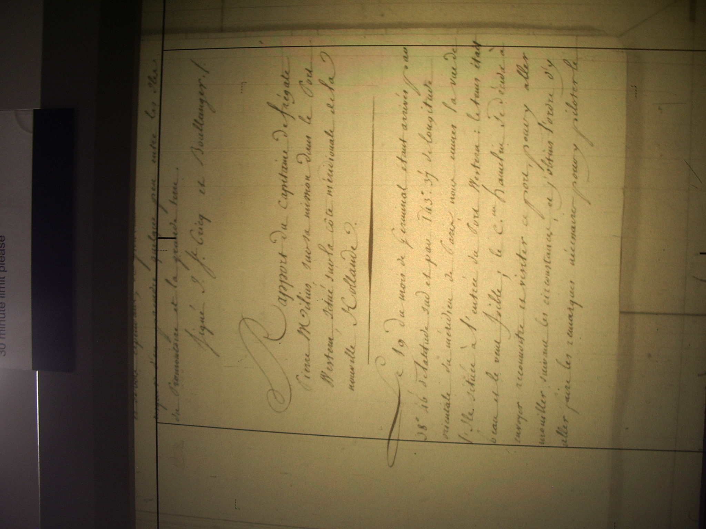
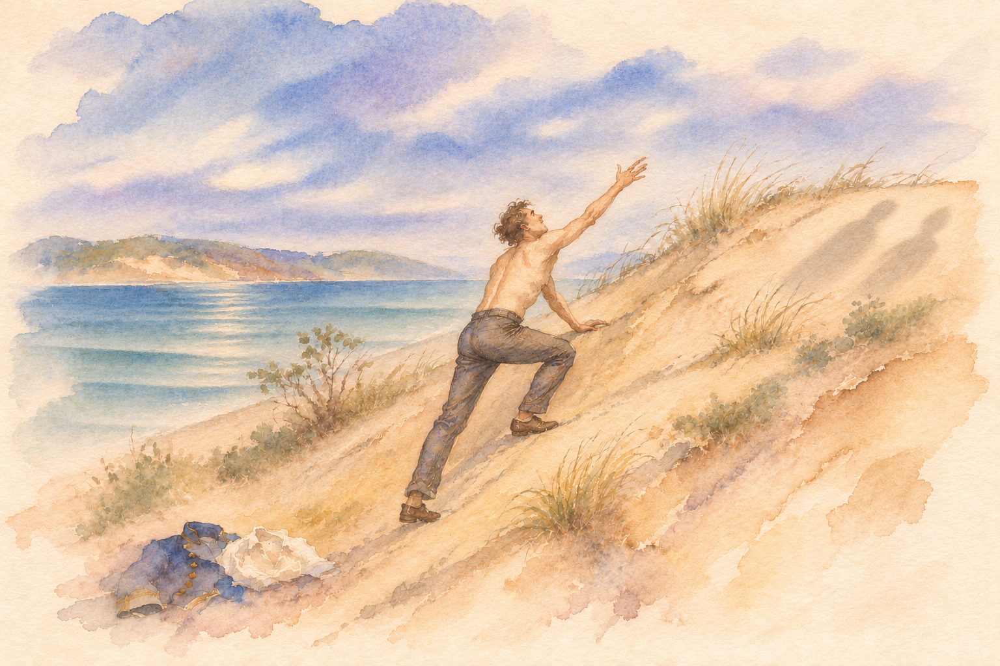
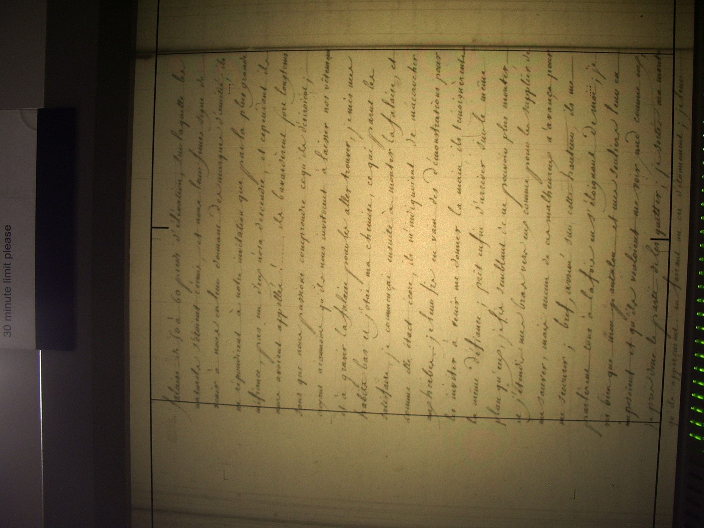
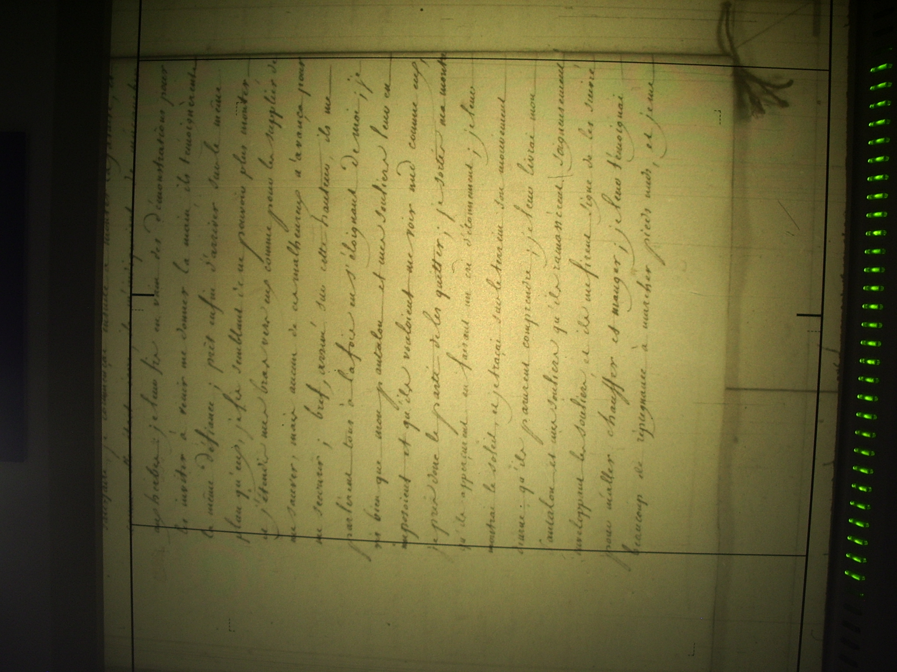
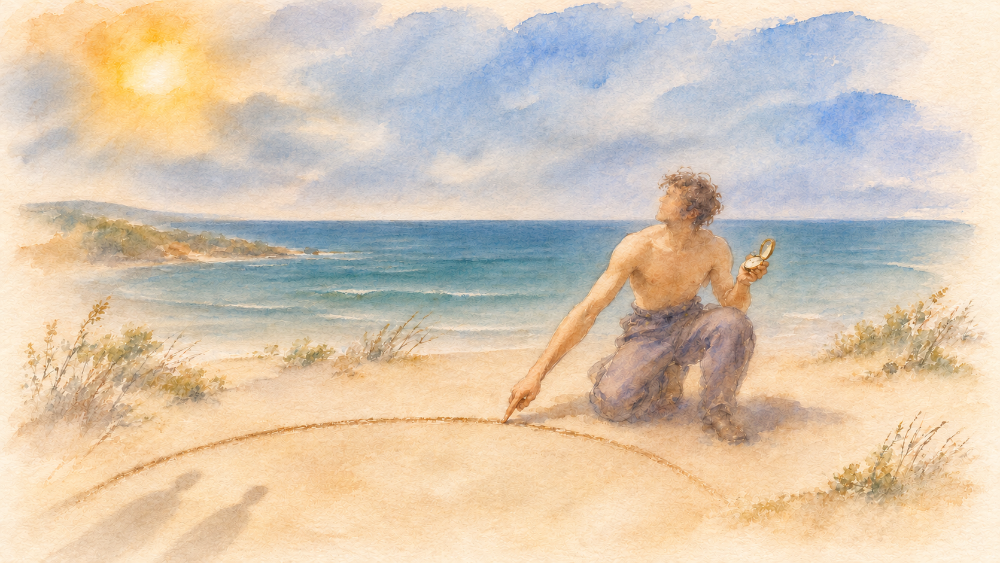
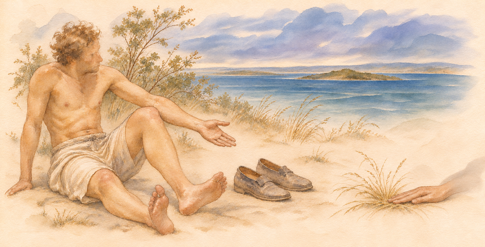
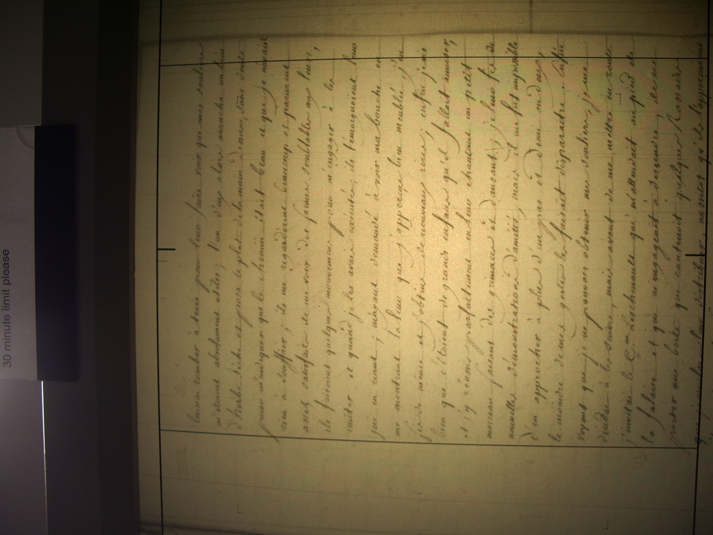
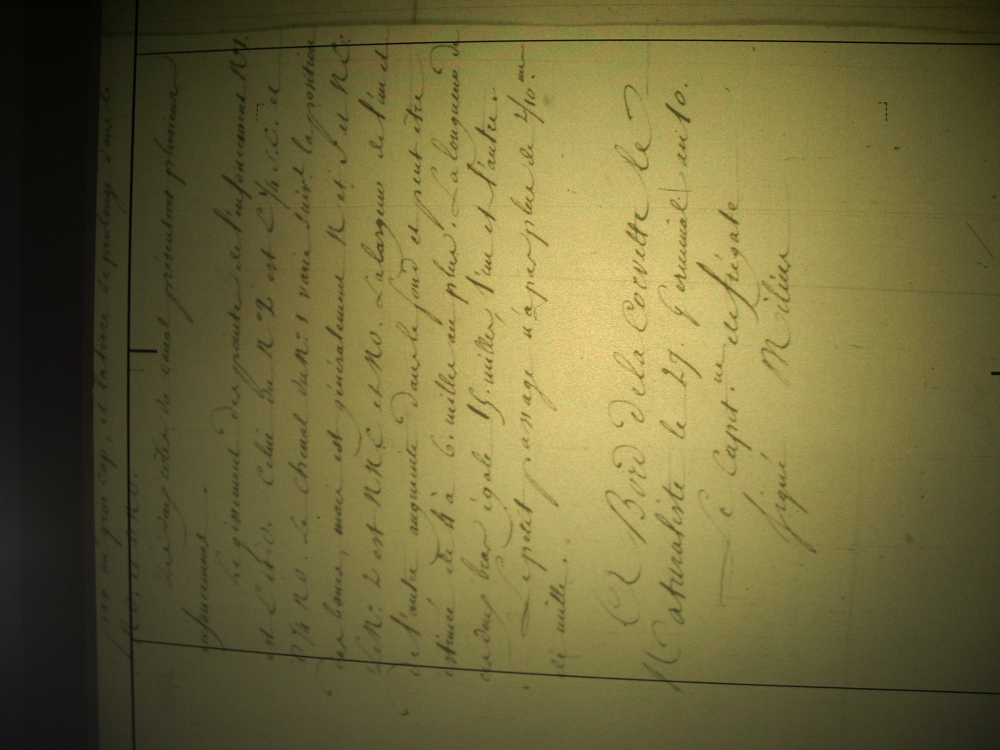

Le 19 du mois de Germinal, étant arrivés par 28°46’ de latitude sud et 143°37’ de longitude orientale du méridien de Paris, nous eûmes la vue de l’île située à l’entrée du Port Western. Le temps était beau et le vent faible.

Le commandant Hamelin se décida à envoyer reconnaître et visiter ce port, pour y aller mouiller suivant les circonstances. J’obtins l’ordre d’y aller faire les remarques nécessaires afin d’y piloter le bâtiment. L’ingénieur géographe Faure fut chargé d’en lever le plan, et moi je devais m’occuper des sondes et des relèvements. Le botaniste Leschenault demanda et obtint la permission de m’accompagner… …
Je mis sous voiles et fis signal au petit canot commandé par l’aspirant Brévédent de passer à couple. Je lui donnai l’ordre de se diriger dans la partie orientale de l’île et de faire des recherches sur le passage que les Anglais ont fermé par un banc de sable. Le courant que j’avais observé pendant la nuit me faisait penser qu’il devait exister une ouverture qui communiquât au nord… …
Toute la partie sud de l’île est bordée de récifs ; la mer roule sans cesse sur une plage de sable… et y cause un bruit épouvantable… Les terres environnantes du grand bassin… sont peu élevées, et, comme dans toute l’étendue du port, couvertes d’arbres qui viennent même dans l’eau… Cette partie de la Nouvelle-Hollande est peu habitée. Je découvris une colonne de fumée dans le grand bassin… Je m’en approchai et entendis les cris des naturels, qui me faisaient signe de venir à eux ; et, par leurs gestes, je compris qu’ils m’indiquaient l’endroit où je pourrais débarquer commodément. J’abordai sur cette côte et descendis sur le rivage accompagné du botaniste Leschenault. J’ordonnai aux deux canots de ne pas se laisser échouer, et je consignai tout le monde à bord pour ne pas épouvanter, par le nombre, ces paisibles habitants.
Nous nous assîmes, le citoyen Leschenault et moi, au pied d’une falaise… et nous leur fîmes signe de venir à nous en leur donnant des marques d’amitié. Ils ne répondirent à notre invitation que par la plus grande méfiance : pas un d’eux n’osa descendre, et cependant ils nous avaient appelés !…
Ils bavardèrent fort longtemps, sans que nous puissions comprendre ce qu’ils désiraient. Croyant néanmoins qu’ils nous invitaient à laisser nos vêtements et à gravir la falaise pour aller les trouver, je mis mes habits bas et j’ôtai ma chemise, ce qui parut les satisfaire. Je commençai ensuite à monter la falaise ; et, comme elle était écore [bord escarpé], ils m’indiquaient de m’accrocher aux herbes. Je leur fis en vain des démonstrations pour les inviter à venir me donner la main : ils témoignèrent la même défiance. Près enfin d’arriver sur le même plan qu’eux, je fis semblant de ne pouvoir plus monter, et j’étendis un bras vers eux, comme pour les supplier de me sauver ; mais aucun de ces malheureux n’avança pour me secourir.



Bref, arrivé sur cette hauteur, ils me parlèrent tous à la fois, en s’éloignant de moi. Je vis bien que mon pantalon et mes souliers leur en imposaient, et qu’ils voulaient me voir nu comme eux. Je pris donc le parti de les quitter. Je sortis ma montre, qu’ils aperçurent en poussant un cri d’étonnement. Je leur montrai le soleil, et je traçai sur le terrain son mouvement diurne, qu’ils parurent comprendre. Je leur livrai mon pantalon et mes souliers, qu’ils ramassèrent soigneusement, enveloppant les souliers, et ils me firent signe de les suivre pour aller me chauffer et manger.

Je leur témoignai beaucoup de répugnance à marcher pieds nus, et je me laissai tomber à terre pour leur faire voir que mes souliers m’étaient absolument utiles. L’un d’eux alors arracha un brin d’herbe sèche et posa le plat de la main dessus, sans doute pour m’indiquer que le chemin était beau et que je n’avais rien à souffrir.

Ils me regardèrent beaucoup et parurent assez satisfaits de me voir d’une forme semblable à la leur. Ils faisaient quelques mouvements pour m’engager à les imiter ; et, quand je les avais exécutés, ils témoignaient leur joie en riant. M’ayant demandé de voir ma bouche, en me montrant la leur que j’aperçus bien meulée, j’en fis de même et j’obtins de nouveaux rires…

Mais il me fut impossible d’en approcher à plus d’un pas et demi ou deux : le moindre de mes gestes les faisait disparaître… …
Conclusion. Le Port Western, situé sur la côte méridionale de la Nouvelle-Hollande, pourrait offrir un grand intérêt à une nation qui aurait en vue de former un établissement sur cette côte ; mais il faudrait, préalablement, faire des recherches dans le fond du bassin pour y trouver une ravine d’eau douce… Le Port Western peut être considéré comme une excellente relâche pour un vaisseau qui, faisant des découvertes, aurait des avaries majeures… et serait obligé de chercher un abri contre le mauvais temps. Le fond est généralement partout de sable… On trouve, en dehors de ce bassin, en sortant par le petit passage, plusieurs sources d’eau vive qui s’écoulent parmi de grosses pierres granitiques qui bordent l’Île Western. À bord de la corvette Le Naturaliste, le 27 Germinal an 10. Signé : Le capitaine de frégate Milius.

Source : Archives nationales de France, MAR/5JJ/24.
Les fac-similés présentés ici sont des photographies de référence réalisées à partir de microfiches. Les transcriptions proviennent de copies conservées à la Mitchell Library (Sydney), à la La Trobe Library (Melbourne) et à la National Library of Australia (Canberra). Ces copies sont issues d'une vaste sélection de documents des archives françaises réunie par le professeur Ernest Scott, de Melbourne, avant 1914, puis transcrite par Mme Robert Hélouis. Cet ensemble comprend notamment des rapports, dont celui de Milius présenté ici.